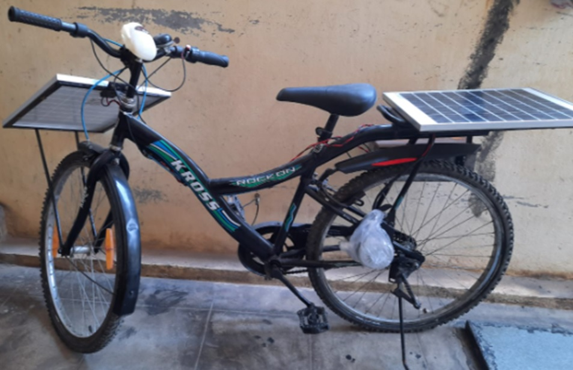
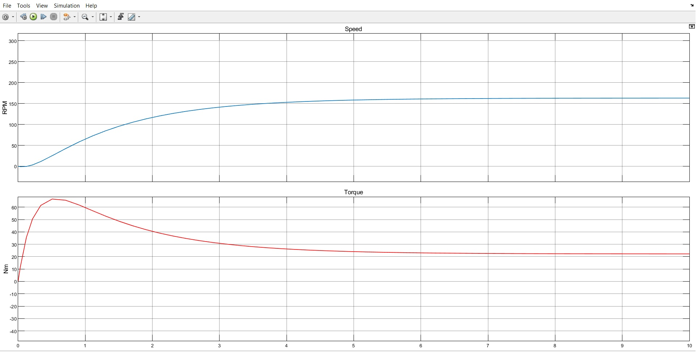
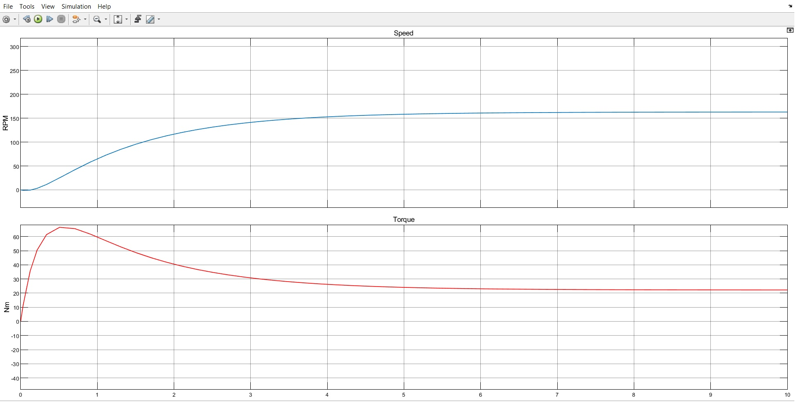

Academic Projects
Smart Appliances

Solar Electric Vehicle
Solar Electric Vehicle
Since the fuel prices are increasing day by day not only in India, but throughout the world, there is a tremendous need to search an alternative to conserve the natural resources and save the environment at the same time by reducing the pollution.
Thus a solar vehicle is an electric vehicle that provides that alternative by harnessing solar energy to charge the battery and thus provide required voltage to run the motor. Since India is blessed with nine months of sunny climate, the concept of solar vehicle is very friendly in India. Therefore solar vehicle can become a vital alternative to the fuel using automobiles. The promising benefits of this concept are:
➢ Using solar energy will enhance the efficiency of the vehicle.
➢ Shifting towards sustainable movement by saving fossil fuels and using sunlight as a renewable resource.
➢ Reducing pollution in the environment, as solar vehicles do not emit toxic gases.
Components Used:
➢ Two 12V Solar Panels
➢ 24volts Brushed DC Motor
➢ Two 12v, 7.5Amp Lead Acid Batteries
➢ A DC Motor Controller
➢ Arduino UNO to display voltage and current readings
➢ Accelerator, Brakes
➢ Solar Charger
➢ Connecting Wires
➢ 5 LED's
➢ Resistors(1-19 kohm, 1-5 kohm, 6-100 ohm)
Working
From the above block diagram, we‘ll get a basic idea of what‘s going on. Let us divide this block diagram into two parts, the below Part and the above part.
The below part tells us how the connections are made between motor and the controller, the above part explains us additionally how solar panels are arranged and used along with the main system. In this entire arrangement, the motor controller is the heart of the system. It is used to control the motor by taking the input from the accelerator and brakes. The accelerator is used to control the speed of the motor and brakes are used to cut the power supply to the motor so that there will be no supply to the wheels to rotate. The motor controller is also used to power the headlamps, brake lights. It also comes with an inbuilt charging port which allows us to charge the batteries using an adaptor. The working of this model is as simple as this: The motor controller takes the input from the accelerator and controls the rotation of the motor similarly it takes input from brakes to cut off the rotation of the motor. But without an external energy source, it is not possible to use the motor. So we have to connect the batteries to the power port on the motor controller to supply adequate power to drive the motor. There are some other minor components such as headlamps, charge indicators which are used to our comfort.
To this system, we additionally need to connect the solar panels to make this an efficient model to use. After arranging the panels, we have to connect the two 12v solar panels in series making in 24v. These wires from solar panels are connected to the charge controller. The use of a charge controller is to avoid any fluctuations and to avoid overcharging of the batteries. To charge the batteries with solar energy we have to connect the battery terminals at their respective terminals on the charge controller. Since we have 2 options to charge the bike now, out of which one is a continuous source, we have succeeded in making an efficient and low-cost electric vehicle to use.
Simulation of the motor to get speed and torque characteristics:
To get the characteristics of a permanent magnet DC motor we used MATLAB and Simulink to design a mathematical model of motor which display Speed and Torque characteristics.
 

To know more about motor simulation please click me
To know more about the project please click on the links below.
Download githubVoice Controlled Robot

Smart Street Lights